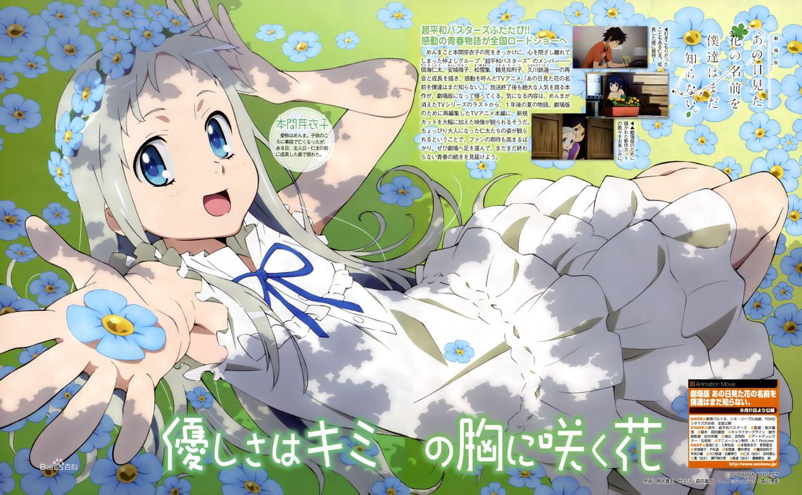
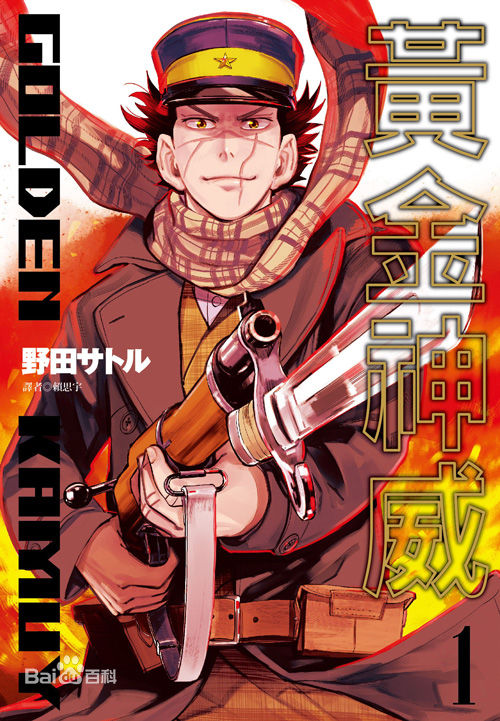
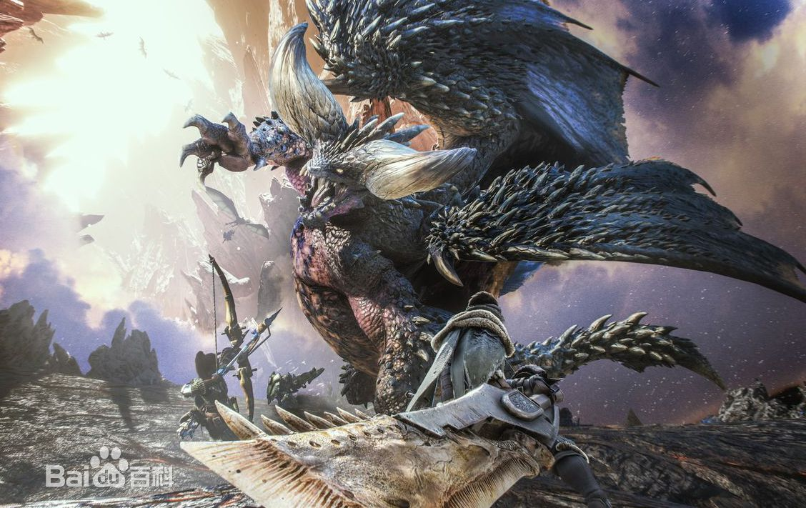

动画《那朵花》是一部用直达内心的笔触描写青春期的少男少女在面对恋情、友情、纠葛时，有欢欣笑容也有伤心泪水的青春原创动画片。 从小时候起一直青梅竹马的6人，却在升上高中之后彼此有了距离。不太与人们接触的主角宿海仁太、有点被小太妹熏染的安城鸣子、进入重点高中的松雪集与鹤见知利子、放弃读高中而展开旅行的久川铁道、只有幼年死去的本间芽衣子（灵魂，只有仁太能看见）还是一如从前。有一天，芽衣子对仁太说："帮我实现一个愿望吧"。仁太虽然有点为难，却还是答应帮助面码实现愿望。以此为契机，为了实现芽衣子的愿望，分散在各处的大家又再次地聚集在一起。 |
漫画★日本亚马逊众多读者评分5颗星的超话题热作!! ★生存、寻宝，为了黄金的战斗在神祕的古北海道大地正式展开－－ 被称为『不死身的杉元』、在日俄战争中有如鬼神般的杀敌， 被世人如此熟知的杉元佐一，为了得到大量的黄金， 来到了昔日淘金热潮盛行的北海道。 于某次机遇下，他得知了隐藏著阿依努人庞大财宝的线索!? 在充满威严的大自然中， 和许多凶恶的死刑犯、以及阿伊努少女相遇， 『寻找黄金的生存竞争』正式开幕!!!  |
游戏《怪物猎人：世界》CAPCOM制作发行的一款动作冒险游戏，在全球范围内都享有盛赞，本代怪物猎人发生了诸多进化，玩法与画面都有非常巨大的进步，游戏最多支持16人联机社区，4人联机狩猎。在游戏中玩家将扮演一位猎人，需要探索一片新发现的神秘土地，关于这片土地人们知之甚少，所以将这片大陆称为“新世界”。猎人们必须利用他们的聪明才智和个人能力才能在激烈、变化多端的战斗中存活下来，并且最终成为终极猎人。 |